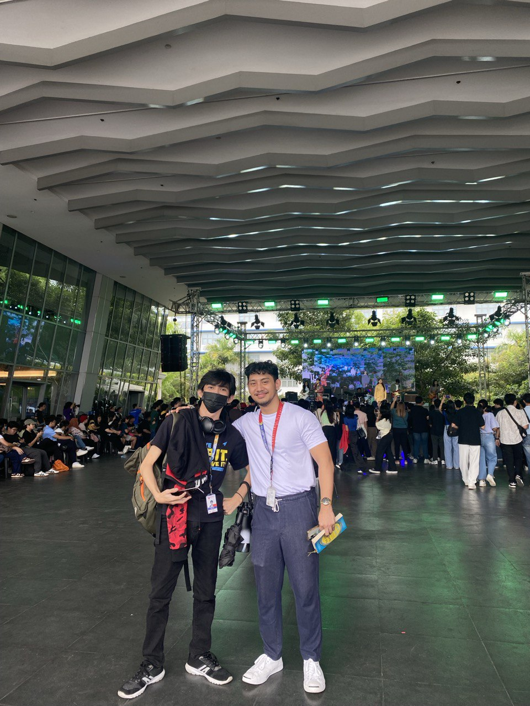

Hello! I'm a dedicated Computer Science student at Mapua Malayan Colleges Mindanao, where my passion for technology and innovation shines through in every project I undertake. My academic journey is fueled by a relentless curiosity about the latest technological advancements and a strong desire to apply these innovations to solve real-world problems. Balancing my studies with a role as an Executive Assistant, I've honed my ability to manage my time efficiently, ensuring that I meet both my academic and professional commitments with excellence.
As a Computer Science student at Mapua Malayan Colleges Mindanao, my academic experience is defined by a continuous pursuit of knowledge in the field of technology. I have consistently demonstrated my interest in my course by engaging deeply with my studies and continuously exploring the latest technologies. My role as an Executive Assistant, alongside my academic endeavors, showcases my ability to maintain a strict balance between work and studies, meeting the demands of both with determination and discipline.
Technologies Used: Vite + React, Kotlin Spring Boot, FastAPI with Selenium, MySQL
Description: A comprehensive web application designed for stock fundamental analysis, featuring web scraping and data processing capabilities. The application operates across three servers, each dedicated to a specific function: frontend development (Vite+React), backend services (Kotlin Spring Boot), and web scraping (FastAPI using Selenium). A separate server hosts the MySQL database.
GitHub Repositories:
Technologies Used: Data Mining and Machine Learning Libraries, FastAPI, HTML, CSS, jQuery, AXIOS
Description: A simple yet effective proof of concept for a loan approval process utilizing machine learning techniques. This project showcases data mining and machine learning concepts, incorporating the model into a FastAPI for use by a basic frontend. The frontend, built with HTML and styled with CSS, interacts with the FastAPI through POST requests using AXIOS and jQuery.
GitHub Repositories:
Technologies Used: C++ Language, Arduino, LEDs, LCD Display, RTC Clock
Description: An innovative device crafted to serve as a medicine reminder, utilizing IoT concepts for functionality. It incorporates LEDs, an LCD display, and an RTC clock, all controlled via an Arduino. This project exemplifies the application of IoT principles in creating practical solutions, with plans for future development that include the integration of AI to enhance user experience.
Project Link: